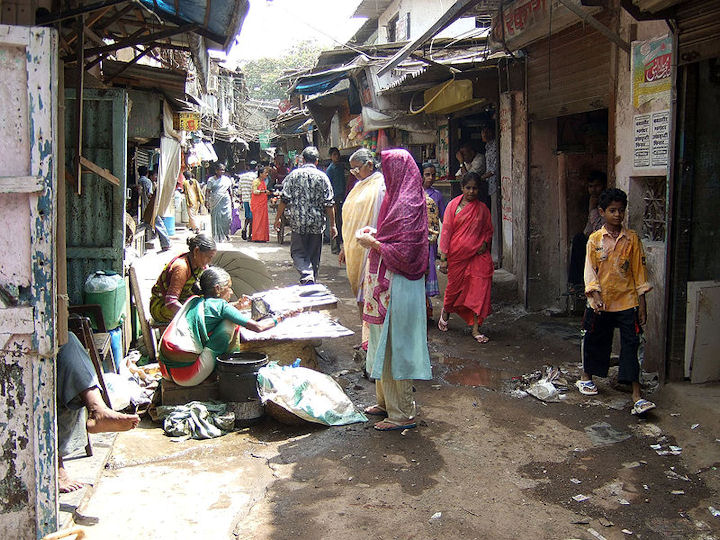

mailto:payer@payer.de
Zitierweise | cite as:
Payer, Alois <1944 - >: Sanskritkurs. -- 50. Lektion 50. -- Fassung vom 2009-01-24. -- URL: http://www.payer.de/sanskritkurs/lektion50.htm
Erstmals hier publiziert: 2009-01-13
Überarbeitungen: 2009-01-24
Anlass: Lehrveranstaltungen 1980 - 1984
©opyright: Dieser Text steht der Allgemeinheit zur Verfügung. Eine Verwertung in Publikationen, die über übliche Zitate hinausgeht, bedarf der ausdrücklichen Genehmigung des Verfassers
Dieser Text ist Teil der Abteilung Sanskrit सत्य् von Tüpfli's Global Village Library
Falls Sie die diakritischen Zeichen nicht dargestellt bekommen, installieren Sie eine Schrift mit Diakritika wie z.B. Tahoma.
Die Devanāgarī-Zeichen sind in Unicode kodiert. Sie benötigen also eine Unicode-Devanāgarī-Schrift.
Die regelmäßige Steigerung erfolgt im
Sanskrit mit den तद्धित-Suffixen
Diese Suffixe werden bei Adjektiven an den Maskulinstamm angefügt. Bei Nomina mit Stammabstufung werden sie an den schwachen Stamm angefügt, die die form hat wie vor der Endung -su des Lokativ (पञ्चमी) Plural. |
Abb.: लोकस्योत्तमो गिरिः
Abb.: सगरमाथा =
ཇོ་མོ་གླང་མ
= 珠穆朗玛峰 = Mount Everest
[Bildquelle: wonker. --
http://www.flickr.com/photos/wonker/2385042288/. -- Zugriff am 2009-01-12.
-- Creative Commons
Lizenz (Namensnennung)]
| Bedeutung: Der "Komparativ" bedeutet, wenn kein verglichener Gegenstand ausgedrückt wird: "ziemlich, sehr, zu":
Wird ein verglichener Gegenstand ausgedrückt, so steht dieser im Ablativ (पञ्चमी). Komparativ + Ablativ entspricht der Steigerung mit "als" im Deutschen.
Der "Superlativ" bedeutet, wen kein verglichener Gegenstand ausgedrückt wird: "äußerst, sehr":
Wird ein verglichener Gegenstand ausgedrückt, so steht dieser im Genetiv (षष्ठी) ("von", "unter") und der Superlativ entspricht dem deutschen Superlativ (Höchststufe):
Die Suffixe -तर und -तम können nicht nur an Adjektive treten, sondern auch an Substantive, Indeklinabilia und sogar Verbalformen: Beispiele:
Treten diese Suffixe an eine Verbalform, so erscheinen sie stets in der adverbialen Form:
Beispiele:
Diese Form haben diese Suffixe auch, wenn sie an ein Indeklinabile treten und das abgeleitete Wort adverbial gebraucht wird:
|
Abb.: का पचतितमाम्
Lisu =
傈僳族,
अरुणाचल प्रदेश
[Bildquelle: parrothanging. --
http://www.flickr.com/photos/biligiri/1857068925/. -- Zugriff am
2009-01-12. --
Creative
Commons Lizenz (Namensnennung, keine kommerzielle Nutzung, keine
Bearbeitung)]
ध्रुव 3: fest, unveränderlich
निषेक m.: Besprengung, Befruchtung, Flüssigkeit, Ejakulat, Zeremonie bei der Zeugung
पण्डित 3: klug, weise, gelehrt
मन् + अव 4Ā अवमन्यते : missachten, verachten
मन्त्रिन् 3: ratgebend ; m.: Berater, Ratsherr, Minister
Abb.: मन्त्री
Kapil Sibal (1948 -), Union minister in Ministry of Science and Technology and
Ministry of Earth Sciences (since 2006)
[Bildquelle: World Economic Forum. --
http://www.flickr.com/photos/worldeconomicforum/3038328904/. -- Zugriff am
2009-01-12. --
Creative Commons Lizenz (Namensnennung, share alike)]
रहस् n.: Geheimnis, Einsamkeit
रिष् 1P रिषति 4P रिष्यति : geschädigt werden, misslingen, beschädigen
Perf. II रिरेष, रिरिषुर्
Fut. रेषिष्यति
Pass. रिष्यते
Kaus. रेषयति
PPP रिष्ट
लुप् 6U लुम्पति : brechen, zerstören
Perf. II लुलोप, लुलुपे
Fut. लोप्स्यति
Pass. लुप्यते
Kaus. लोपयति
PPP लुप्त
Inf. लोप्तुम्
Gerundiv लुप्य । लोप्य
विधि m.: auch: Schicksal (zu विधा)
वृष् 1P वर्षति : regnen (meist mit einem कर्तृ -- einem Gott oder einer Wolke)
Perf. II ववर्ष, ववृषुर्
Fut. वर्षिष्यति
Pass. वृष्यते
Kaus. वर्षयति
PPP वृष्ट
Inf. वर्षितुम्
Absol. वर्षित्वा । वृष्ट्वा
Absol.-वृष्य
Abb.: महामेघो वर्षिष्यति
Ankunft des Monsun, Bangalore ಬೆಂಗಳೂರು
[Bildquelle: vandan desai. --
http://www.flickr.com/photos/vandan/526579892/. -- Zugriff am 2009-01-12. --
Creative
Commons Lizenz (Namensnennung, keine kommerzielle Nutzung, keine
Bearbeitung)]
संयक् Adv.: richtig, wahrhaft, auf die gehörige Weise ; durchaus, vollständig
आदित्य m.: Sonne ; pl.: Āditya : eine bestimmte Götterklasse
Abb.: आदित्यः
[Bildquelle: sunder_iyer. --
http://www.flickr.com/photos/sunder_iyer/2225272284/. -- Zugriff am
2009-01-12. --
Creative Commons Lizenz (Namensnennung, share alike)]
सर्व 3: jeder, alle
Deklination wie यद् (Ausnahme: Nom.Akk.sg.Neutrum)
| Singular एकवचनम् |
Plural बहुवचनम् |
|||||
|---|---|---|---|---|---|---|
| Maskulinum पुंस् |
Neutrum नपुंसकम् |
Femininum स्त्री |
Maskulinum पुंस् |
Neutrum नपुंसकम् |
Femininum स्त्री |
|
| सर्वस् | सर्वम् | सर्वा | सर्वे | सर्वाणि | सर्वास् | |
| 1. Nominativ १. प्रथमा |
||||||
| 2. Akkusativ २. द्वितीया |
सर्वम् | सर्वम् | सर्वाम् | सर्वान् | सर्वाणि | सर्वास् |
| 3. Instrumentalis ३. तृतीया |
सर्वेण | सर्वया | सर्वैस् | सर्वाभिस् | ||
| 4. Dativ ४. चतुर्थी |
सर्वस्मै | सर्वस्यै | सर्वेभ्यस् | सर्वाभ्यस् | ||
| 5. Ablativ ५. पञ्चमी |
सर्वस्मात् | सर्वस्यास् | सर्वेभ्यस् | सर्वाभ्यस् | ||
| 6. Genetiv ६. षष्ठी |
सर्वस्य | सर्वस्यास् | सर्वेषाम् | सर्वासाम् | ||
| 7. Lokativ ७. सप्तमी |
सर्वस्मिन् | सर्वस्याम् | सर्वेषु | सर्वासु | ||
वै : Partikel, der das vorangehende Wort betont: fürwahr, wahrlich, aber
इह Adv.: hier, hier auf Erden, hierher ; jetzt. Vor Substantiven im Lokativ (षष्ठी) gleichbedeutend mit अस्मिन्, अस्याम्
कल्प m: Satzung, Brauch, Ritual ; Weltperiode (zu कॢप्)
कल्याण 3 (f.: कल्याणी) :schön
Abb.: कल्याणी
[Bildquelle: dhyanji. --
http://www.flickr.com/photos/dhyanji/131433199/. -- Zugriff am 2009-01-12.
-- Creative
Commons Lizenz (Namensnennung, keine kommerzielle Nutzung, keine
Bearbeitung)]
कु- : als Vorderglied von Komposita: schlecht

Abb.: कुनगरम्
धारावी, मुंबई
[Bildquelle: Kounosu / Wikipedia. GNU FDLicense]
चक्ष् 2Ā चष्टे 2.pl. Ā चड्ढ्वे : sehen
Perf. चचक्षे
in den übrigen Tempora nicht verwendet
चक्ष् + प्र 2Ā प्रचष्टे : erzählen, halten für, nennen
देश m.: Ort, Platz, Land, Gegend
A) Zur Wiederholung der Deklination: folgender Vers enthält alle Deklinationsformen im Singular zu गुरु m.:
गुरुरेव गतिर्गुरुमेव भजे
गुरुणैव सहास्मि नमो गुरवे ।
न गुरोः परमं शिशुरस्मि गुरोर्
मतिरस्ति गुरौ मम पाहि गुरो ॥
Abb.: गुरुमेव भजे
Ganeshpuri, 80 km von Mumbai (मुंबई) entfernt
[Bildquelle: Dey. --
http://www.flickr.com/photos/dey/2691860037/. -- Zugriff am 2009-01-13. --
Creative
Commons Lizenz (Namensnennung, keine kommerzielle Nutzung, share alike)]
B) Übersetzen Sie:
मनुस्मृति ४, १७८
येनास्य पितरो याता
येन याताः पितामहाः ।
तेन यायात्सतां मार्गम्
तेन गच्छन्न रिष्यते ॥१॥
मनुस्मृति ३, ६३
कुविवाहैः क्रियालोपैर्
वेदानध्ययनेन च ।
कुलान्यकुलतां यान्ति
ब्राह्मणातिक्रमेण च ॥२॥
मनुस्मृति ३, ६०
संतुष्टो भार्यया भर्ता
भर्त्रा भार्या तथैव च ।
यस्मिन्नेव कुले नित्यम्
कल्याणं तत्र वै ध्रुवम् ॥३॥
मनुस्मृति ३, ७५ - ७६: Über die Notwendigkeit des Opfers
स्वाध्याये नित्ययुक्तः स्याद्
दैवे चैवेह कर्मणि ।
दैवे कर्मणि युक्तो हि
बिभर्तीदं चराचरम् ॥४॥
अग्नौ प्रास्ताहुतिः सम्यग्
आदित्यमुपतिष्ठते ।
आदित्याज्जायते वृष्टिर्
वृष्टेरन्नं ततः प्रजाः ॥५॥
योगसूत्र २, १६ - १७
हेयं दुःखमनागतम् ॥६॥
द्रष्टृदृश्ययोः संयोगो हेयहेतुः ॥७॥Erklärung:
द्रष्टृदृश्ययोः : Gen.Lok.m.n.f.Dual (Dualdvandva)
कौटिलीयार्थशास्त्र १, १५: Über Ratgeber des Königs
न किंचिदवमन्येत
सर्वस्य शृणुयानमतम् ।
बालस्याप्यर्थवद्वाक्यम्
उपयुन्जीत पाण्डितः ॥८॥
मनुस्मृति २, १४० - १४२: Definition von आचार्य, उपाध्याय, गुरु
उपनीय तु यः शिष्यं
वेदमधापयेत्द्द्विजः ।
सकल्पं सरहस्यं च
तमाचार्यां प्रचक्षते ॥९॥एकदेशं तु वेदस्य
वेदाङ्गान्यपि वा पुनः ।
यो ऽध्यापयति वृत्त्यर्थम्
उपाध्यायः स उच्यते ॥१०॥निषेकादीनि कर्माणि
यः करोति यथाविधि ।
संभावयति चान्नेन
स विप्रो गुरुरुच्यते ॥११॥Erklärungen:
निषेकादीनि : Nom.Akk.pl.Neutrum
Zu Lektion 51